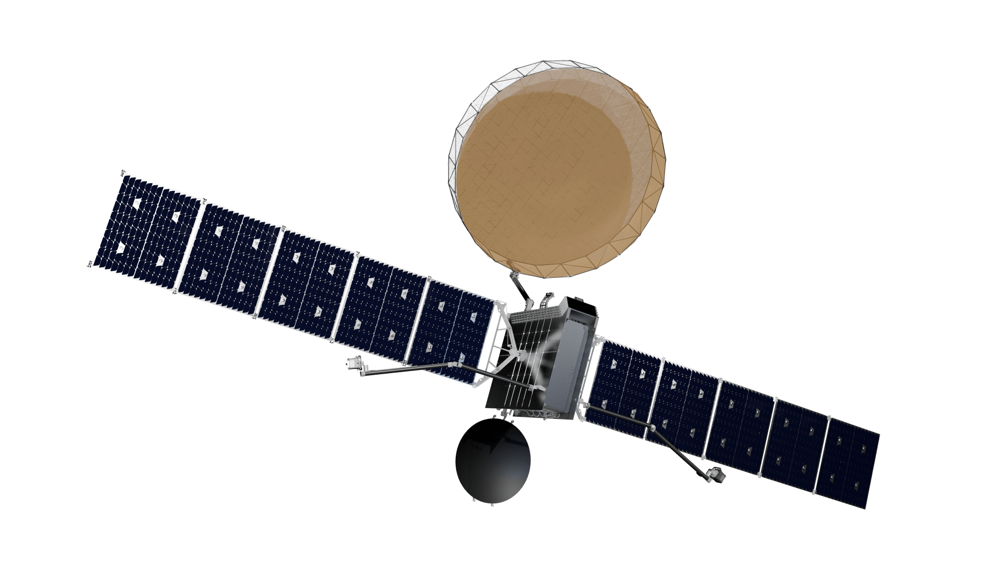

Astranis Guidance, Navigation, and Control (GNC) Internship
05/2025 – 08/2025 · Industry
Contributors
Clemens Rumpf (Manager), Jordan Kalatchev (Mentor), Astranis GNC Team
Overview
Astranis aims to make Geostationary satellites for improved internet access across the world. They aim to build flexible, resilient, high-speed communication networks. During this summer, I worked across satellite guidance (got to plan and help execute a burn), and both offline (orbit determination) and online estimation (Kalman filtering).
Contributions
- Improved orbit determination processing pipelines to handle monopulse biases and measurement continuity.
- Streamlined MEKF data ingestion in Sift and implemented NIS consistency to improve estimation analysis.
- Planned a drift-increasing burn through simulation and FlatSat hardware-in-the-loop testing, executed it in Mission Operations and achieved a drift rate of within 2% of the target.
- Upgraded existing monte-carlo tooling to become Bazel-based for smoother interfacing of Python simulation code with C++ Flight Software, verified performance in GitHub workflows and Google Cloud infrastructure.


Astranis Spacecraft (Credit: Astranis)